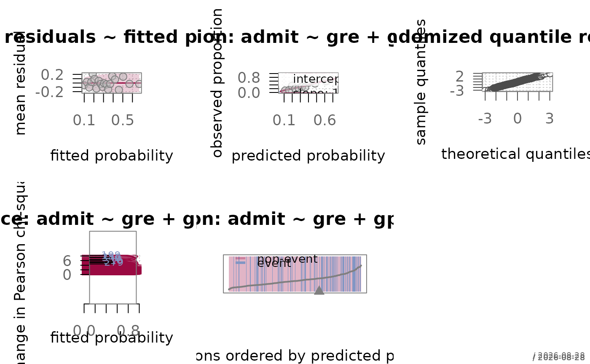
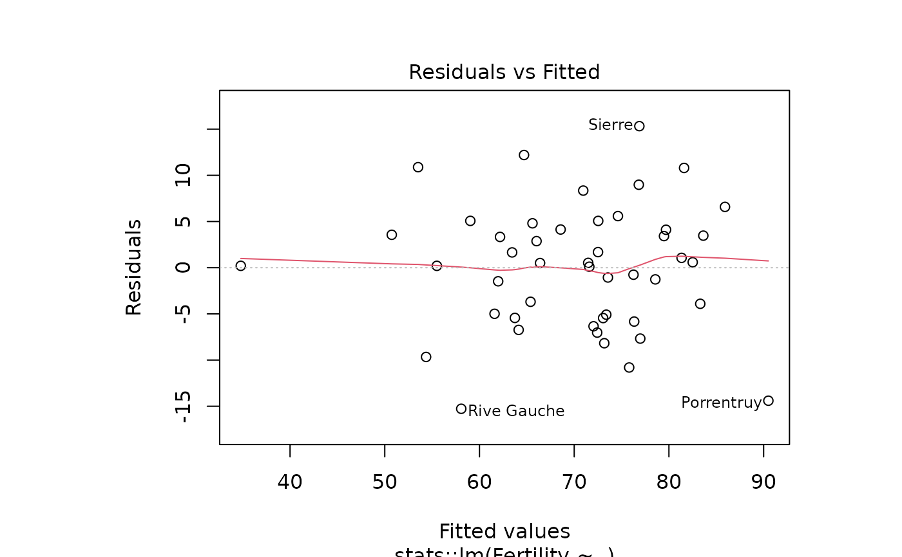
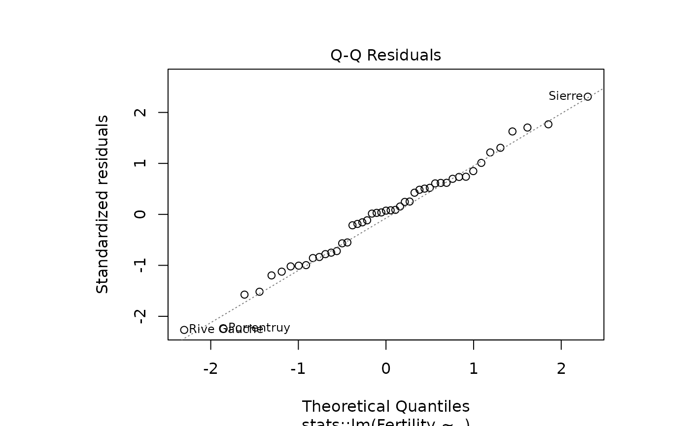
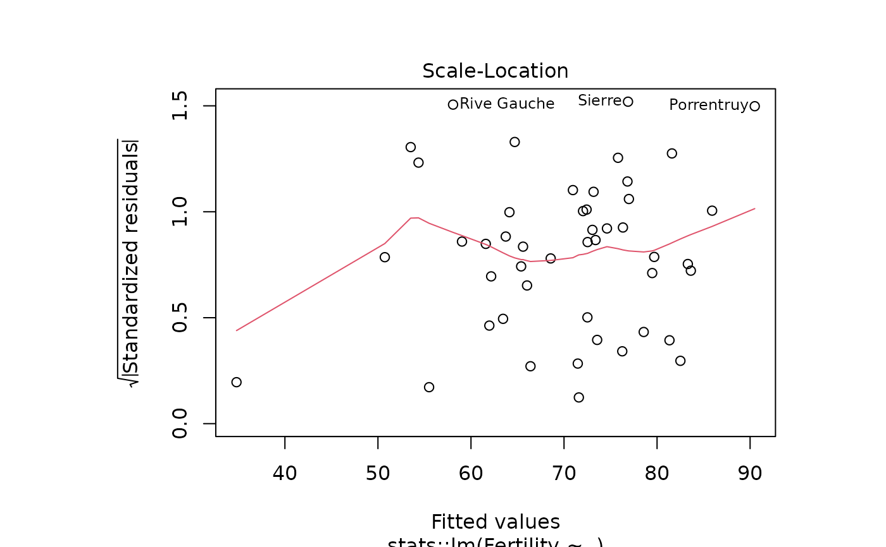
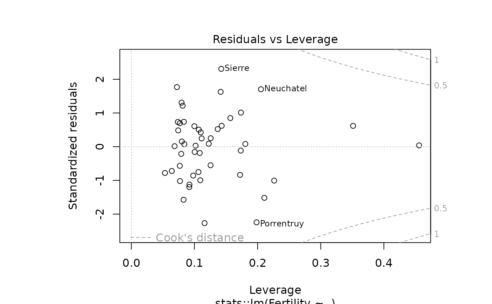

Draws the diagnostic panels for a fitted model. For a logistic model the panels are the ones that work for a binary response; for every other model type the call is passed on to the plot method of the underlying model object.
Usage
# S3 method for class 'FitMod'
plot(x, which = 1:5, ask = NULL, ...)Arguments
- x
a fitted model of class
"FitMod".- which
panels to draw, a subset of
1:5. See Details.- ask
logical; ask before drawing each panel that would start a new page. Defaults to
TRUEwhen more panels are requested than the current layout holds and the device is interactive.- ...
further arguments passed to every panel drawn. Arguments that only one panel understands (
var,newdata,metric, ...) are better given by calling that panel function directly.
Details
The residual-versus-fitted plot that plot.lm draws
is empty for a binary response - the residuals fall on the two curves
\(-p\) and \(1-p\) and nothing else can be read from them. The
panels here replace it:
- 1
binned residuals against the fitted probabilities (
plotBinnedResid) - overall functional form- 2
calibration curve (
plotCalibration) - are the predicted risks right at the level they claim- 3
Q-Q plot of randomized quantile residuals (
quantileResid) - the one residual definition that is normal under a correct binary model- 4
influence (
plotInfluence) - which observations the model fits badly, and which of those move it- 5
separation (
plotSeparation) - how well the predictions order the outcomes
Linearity in the logit is checked per predictor and therefore has no
fixed panel number; call plotPartialResid for the terms
in question, or plotBinnedResid with var set.
No layout is set: with more panels selected than the device holds, the
method asks before each new page when the session is interactive, as
plot.lm does. Arranging panels on one page is the
caller's business (par(mfrow = c(2, 3))).
See also
model-diagnostics-overview for an overview of the diagnostics for logistic models in alloy.
Other modelling:
fitMod(),
predict.FitMod(),
predictors(),
print.FitMod()
Examples
fitLogit <- fitMod(admit ~ gre + gpa + rank, Admit, fitfn = "logit")
op <- par(mfrow = c(2, 3))
plot(fitLogit)
par(op)

plot(fitLogit, which = 2)
 # other model types keep their own diagnostics
plot(fitMod(Fertility ~ ., swiss))
#> fitMod: using fitfn = 'lm'
# other model types keep their own diagnostics
plot(fitMod(Fertility ~ ., swiss))
#> fitMod: using fitfn = 'lm'



